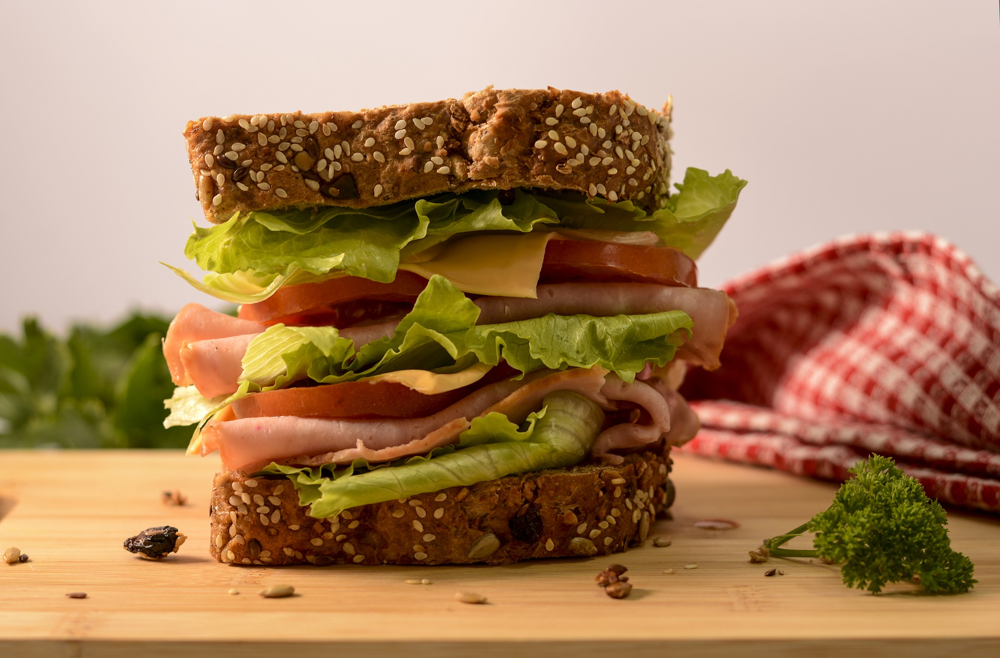

Sandwich

An old reliable favorite! The sandwich is a staple of a quick and easy lunch!
It is hard to go wrong with a good old fashion sandwich. The king of the quick lunches! From simple ham, mayo, and cheese to the biggest stack
of bread, meats, cheese, lettuce, and other toppings, the sandwich rules them all! Of course, everyone has their prefrence to their sandwich.
For this recipe I will be going through my personal preference of a sandwich for lunch!
Ingredients
- Bread
- A good bread! Any bread you like really.
- Ham
- Any deli ham will do, but if you want a good sandwich, some Boar's Head ham
really hits the spot.
- Cheese
- Again, personal preference. I usually go with provolone.
- Lettuce
- Gotta have the lettuce!
- Mayo
- Personal preference again. Or optional if you do not like mayo! Personally Kewpie
mayo tastes the best!
- Mustard
- Once again, personal preference! Old fashion yellow mustard is my choice!
Cooking Tools
- Plate
- For serving and creating your masterpiece!
- Spatula
- For spreading the condiments!
Follow these steps to make my usual sandwich!
Steps
- On the place, put out two slices of the bread of your choice.
- On both slices of the bread, squeeze the Kewpie mayo and mustard (to your desired amount) and spread with spatula to cover evenly.
- Layer down some ham on one of the slices of bread.
- Layer down a few slices of cheese on the ham.
- Layer down some washed and dried lettuce on the cheese.
- Place the other slice of bread on top. Slice in half if desired.
- Enjoy!
Tips
- Try warming up your ham in the microwave for a warm sandwich.
- Try putting other toppings, such as tomato or cucumber, for more variety.
Back to Top